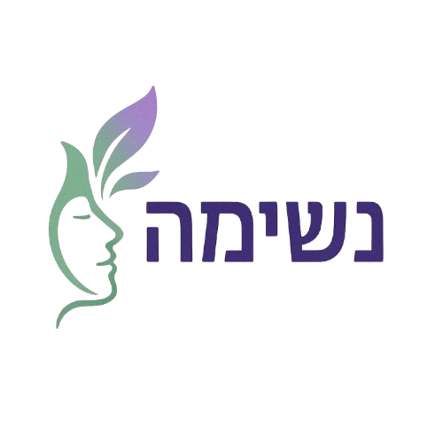

שאלון אבחון פוסט טראומה
שאלון זה אינו מחליף ייעוץ/אבחון רפואי או מקצועי בשום צורה.
האם אתה חווה פלאשבקים - תחושה שאתה חוזר לאירוע טראומטי, כאילו הוא קורה
שוב, עם תמונות, קולות, ריחות או תחושות פיזיות?
האם אתה סובל מסיוטי לילה - חלומות חוזרים ונשנים על האירוע הטראומטי?
האם יש לך מחשבות חודרניות - מחשבות ודימויים לא רצוניים על האירוע, שקשה לך
להיפטר מהם?
האם אתה חווה מצוקה רגשית או פיזית חזקה (כמו חרדה, פחד, דופק מהיר, הזעה)
כשמשהו מזכיר לך את האירוע הטראומטי (טריגר)?
האם אתה נמנע ממקומות, אנשים או פעילויות שמזכירים לך את הטראומה?
האם אתה מנסה לדכא מחשבות או רגשות הקשורים לאירוע הטראומטי?
האם איבדת עניין בפעילויות שנהנית מהן בעבר?
האם יש לך מחשבות שליליות על עצמך או על העולם (למשל, תחושה שהעולם מסוכן,
שאתה "מקולקל", או שאתה אשם באירוע)?
האם אתה מרגיש מנותק מאחרים, או שאתה מתקשה לחוש רגשות חיוביים (כמו אהבה
ושמחה)?
האם אתה חווה עצבנות או התפרצויות כעס, גם על דברים קטנים?
האם אתה מתקשה להתרכז או להשלים משימות?
האם יש לך תחושה קבועה של דיכאון, חוסר תקווה או אדישות?